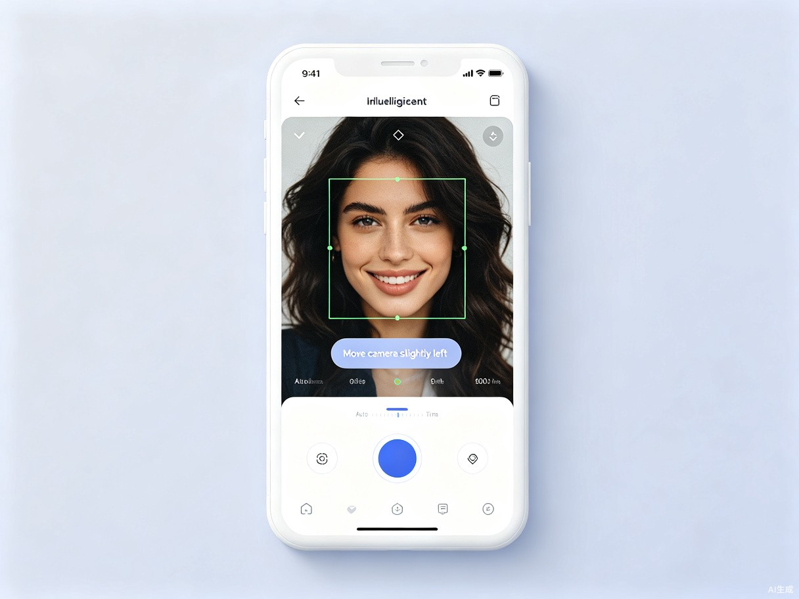
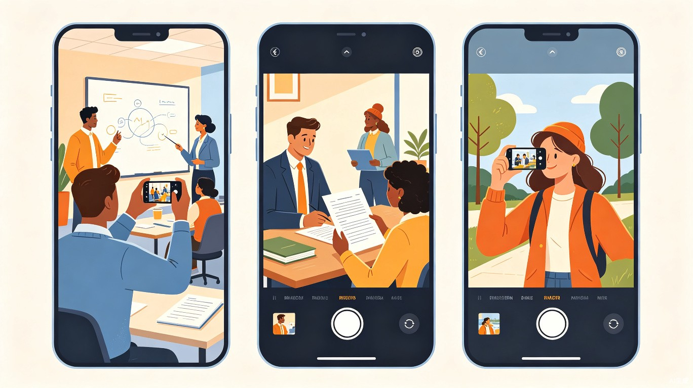

「定格」智能AI摄影助手
让AI成为你的私人摄影教练，一键拍出专业级照片
1创意名称 + 创意介绍
创意名称
「定格」智能AI摄影助手 —— 一款专为摄影小白打造的AI驱动的智能相机APP。打开APP后，系统会根据当前相机的参数、环境光线、场景类型等实时数据发送给AI模型分析，自动调节ISO、快门速度、白平衡、对焦等核心参数，同时通过取景画面智能识别被摄主体，以可视化的方式引导用户如何移动相机、将人物或物体放置在最佳构图区域。
想解决什么问题
许多人在学习和工作场景中需要拍摄高质量照片（如课堂板书、会议PPT、证件照、文档存档等），但因为不懂摄影参数调节和构图技巧，拍出的照片往往模糊、过曝或构图失衡，无法满足使用需求。
为什么会想到做这个
在日常学习和工作中，拍照已经成为高频刚需。我们发现市面上的相机APP两极分化严重：要么功能过于简单，无法应对复杂场景；要么专业模式参数繁多，让小白用户无所适从。与此同时，大模型和多模态AI技术的成熟，让"傻瓜式专业摄影"成为可能——用户不需要理解f/1.8和ISO 800的区别，也能拍出媲美单反的效果。
产品形态
一款基于AI实时分析的智能手机相机APP，支持iOS与Android双平台，核心功能包括：智能参数调节、实时构图指导、场景识别优化、一键后期处理。
★核心功能亮点
AI 自动调参
实时采集环境光、距离、运动状态等数据，AI毫秒级计算最佳曝光组合，自动调节ISO、快门、光圈、白平衡。
智能构图引导
通过取景画面实时识别主体，以动态框线、箭头提示引导用户移动相机，自动应用三分法、对称、引导线等构图法则。
场景智能识别
自动识别课堂板书、会议文档、人像、风景、美食等20+场景，针对性优化拍摄策略和色彩风格。
一键后期优化
拍摄完成后AI自动完成裁剪、调色、锐化、去噪等后期处理，输出可直接使用的高质量成片。
★产品界面概念

使用流程
2目标用户及痛点
面向哪些用户
- 大学生群体：需要拍摄课堂板书、实验记录、社团活动，但预算有限买不起专业设备
- 职场新人：会议记录、白板讨论、文档存档是日常工作刚需，但拍摄质量参差不齐
- 教师与培训师：需要清晰记录教学过程，制作高质量课件素材
- 内容创作者：希望快速产出高质量图片用于社交媒体，但缺乏摄影基础
在什么场景下使用

- 课堂上拍摄黑板/投影内容，文字清晰不模糊
- 会议室记录白板讨论，视角端正不变形
- 拍摄证件照，自动抠图换背景、调整光线
- 文档数字化存档，自动矫正透视、增强对比度
- 旅行打卡、美食分享，一键拍出大片感
当前痛点
参数门槛高
手动调节ISO、快门速度、白平衡等参数需要专业知识，普通用户完全无从下手。
构图靠经验
不懂三分法、黄金分割、引导线等构图规则，拍出的照片缺乏美感。
光线判断难
光线不足或过强时无法判断最佳拍摄时机，导致废片率极高。
后期太麻烦
现有APP的"自动模式"在复杂场景下表现不佳，后期修图又耗时耗力。
3价值与意义
效率提升角度
将原本需要数周学习的摄影知识压缩为秒级的实时AI指导。用户无需理解复杂的摄影原理，只需跟随屏幕上的引导提示移动相机，即可在学习和工作场景中快速获得清晰、专业的照片。据测算，使用「定格」后，用户的一次出片率可从30%提升至85%以上，大幅减少重拍和后期修图时间，让拍照从一件需要反复尝试的麻烦事，变成随手可得的技能。
社会价值角度
影像已经成为现代社会最重要的信息载体之一。然而，高质量的影像创作长期被专业设备和知识门槛所垄断。「定格」通过AI技术打破摄影的技术壁垒，让每个人都能平等地记录和分享知识、工作与生活中的重要瞬间。无论是偏远地区的学生清晰记录课堂内容，还是老年人轻松拍出孙辈的成长照片，技术的普惠性都在其中得到充分体现。我们相信，当更多人能够轻松创作高质量影像，信息的有效传递和知识的留存效率将得到全社会的提升。
★技术实现亮点
- 多模态大模型：集成视觉-语言大模型，实时理解取景画面内容并输出操作建议
- 端侧AI推理：参数调节和场景识别在本地完成，响应速度<100ms，保护用户隐私
- 自适应学习：根据用户的拍摄习惯和反馈持续优化推荐策略，越用越懂你
- 跨平台架构：基于React Native + TensorFlow Lite构建，一套代码覆盖iOS/Android